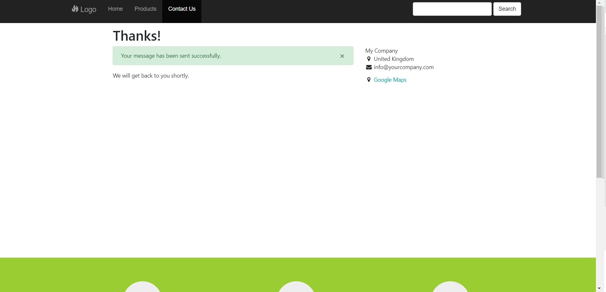

An iframe needs to be placed upon the website page that you wish the form/page from Odoo to appear.
The module will then display the content of the form/page within the iframe.
Code Example:
<iframe src="http://YourOdooURLHere.com/contactus?iframe=1" width="100%" height="600px" border="0" style="border:none;padding-top:20px"> </iframe>
If for any reason you want to turn the module off then you change the url to iframe=0.
The module will not interfere with any /web pages which are the Odoo backend administration section.
If necessary advanced options are available to perform aditional configuation of the form displayed inside the Iframe.
Simply goto the settings section of Odoo, then the PR1 Menu and then the Iframe Settings menu item.
When the form is submitted you see the standard Odoo Thanks screen here.
